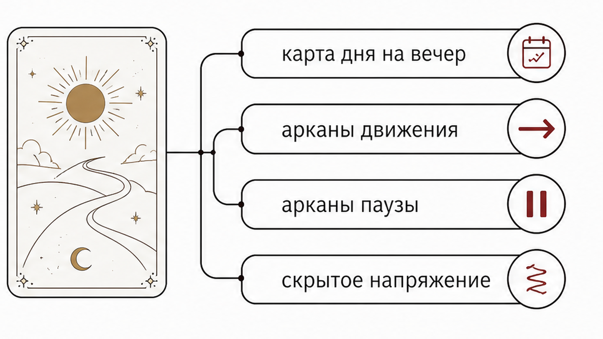
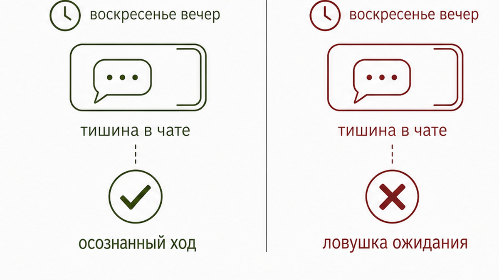
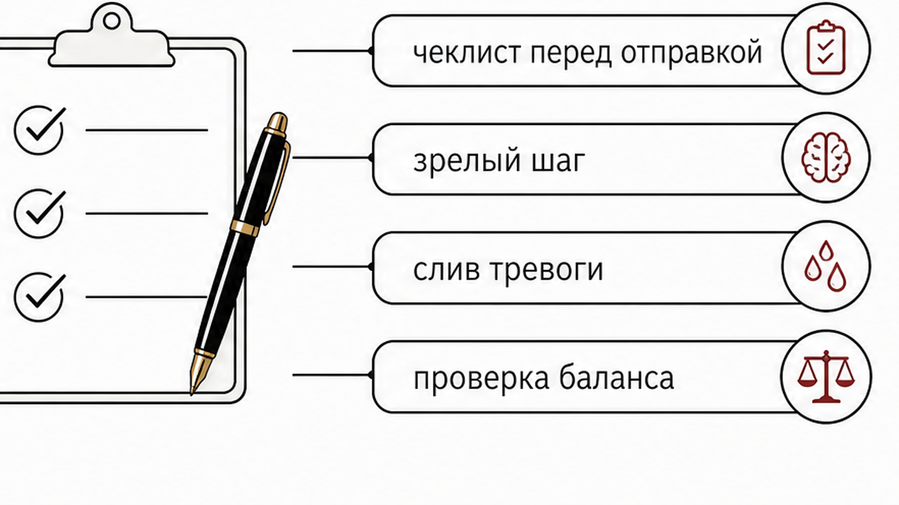

Телефон лежит экраном вверх на краю стола. В диалоге висит тишина ещё со вчерашнего короткого «вечером наберу». Ты проверяешь время последнего захода и ловишь себя на растущем напряжении перед новой рабочей неделей. В голове крутится вопрос: появится ли заветное сообщение до полуночи или стоит сделать шаг самой прямо сейчас? Когда ожидание затягивается, тревога начинает подсовывать худшие сценарии. Но вечерняя тишина в мессенджере имеет понятные причины, которые можно разобрать спокойно и без лишних домыслов.

Карта дня для вечернего окна работает как точный камертон момента, а не пожизненный приговор общению. Когда ты задаёшь вопрос о контакте на ближайшие несколько часов, карта показывает направление энергии и состояние канала связи, а не сухое «да» или «нет».
За окном темнеет, чат молчит, и рука сама тянется к колоде за быстрым ответом. В этот момент легко попасть в ловушку и начать требовать от карт готового вердикта на всю неделю вперёд. В практике таро важно разделять внутреннее состояние человека и его готовность нажать кнопку отправки. Мужчина может тепло вспоминать о тебе, но отложить телефон из-за накопившейся усталости или подготовки к сложному понедельнику. Карты не читают мысли за закрытыми дверями и не заменяют прямой разговор, но помогают трезво оценить обстановку.
Если выпавшая карта показалась тревожной, самая частая ошибка – тут же вытягивать вторую карту из страха. Повторные вопросы подряд только отражают твою растущую панику и размывают фокус. Вместо бесконечных пересдач полезно оценить выпавший аркан как ориентир для действий:
Когда выпадает сложная карта, важно вовремя снизить риски и не совершать резких поступков на эмоциях.

Возьмём воскресенье, около восьми вечера. На плите остывает суп с обеда, по телевизору сериал крутит заставку, а в диалоге последнее его сообщение с фразой «вечером наберу» висит ещё с субботы. В такой обстановке легко поддаться иллюзии, будто тишина до полуночи перечёркивает всё будущее общение. Кажется, что если он не напишет в ближайшие два часа, то впереди останется только глухая стена.
В прогнозах недели часто звучит Восьмёрка Мечей. Этот аркан напоминает: ощущение безвыходности и закрытых дверей чаще всего создают наши собственные жёсткие установки, а не реальные внешние преграды. Ты сама строишь вокруг себя рамку из правил вроде «он обязан написать до девяти» и начинаешь мучить себя ожиданием.
Вечер воскресенья требует спокойного завершения дел и входа в рабочий ритм. В этот период особенно важно сохранять личные границы и помнить о том, что у другого человека тоже есть право на усталость. Если сейчас набрать эмоциональный текст с упрёками о том, что ты прождала весь выходной, такой шаг станет попыткой сбросить внутреннее напряжение за чужой счёт. Мужчина моментально считает претензию и закроется ещё сильнее.
Осознанный ход строится иначе. Это короткая спокойная фраза по делу, за которой не стоит скрытого требования отчитаться за каждый час молчания.

Палец снова замирает над кнопкой отправки. Сообщение набрано, стёрто и переписано в трёх разных вариантах. Внутри борется желание прояснить ситуацию и страх показаться навязчивой.
В обществе до сих пор держится токсичный миф о том, что инициатива со стороны женщины якобы означает слабость или потерю контроля над ситуацией. На самом деле первый шаг в диалоге служит открытым дружеским приглашением к общению. Главное значение перед отправкой имеет твоё собственное внутреннее состояние.
Чтобы понять, стоит ли отправить сообщение сегодня вечером, полезно пройти короткий чеклист:
Искусственные игры с выжиданием нескольких дней ради демонстрации неприступности только разрушают искренний контакт. Если ты чувствуешь спокойное желание выйти на связь, выбери одну простую фразу без двойного дна и дай человеку время спокойно ответить до утра без давления.
Когда внутри поднимается буря вопросов о сообщениях и поступках близкого человека, лучше всего перевести внимание с бесконечных догадок на ясный разбор ситуации. Карты помогают увидеть реальное состояние контакта и подсказывают лучший шаг без иллюзий и самообмана.
Если ты хочешь быстро прояснить текущий момент, заходи в бот в Макс. Там доступны 3 бесплатных расклада на 3 любых вопроса. Ты можешь задать свой вопрос через голос или текст и выбрать подходящий формат: наглядный триплет на три карты или подробный кельтский крест на десять карт.
Для глубокого понимания скрытых мотивов и теневых процессов в отношениях открывай приложение во ВКонтакте или используй приложение Макс. Там тебя ждет полноценный аудиоразбор по проверенной структуре «Суть – Тень – Вектор», дополнительная карта практического совета и возможность задать уточняющие вопросы по ситуации.